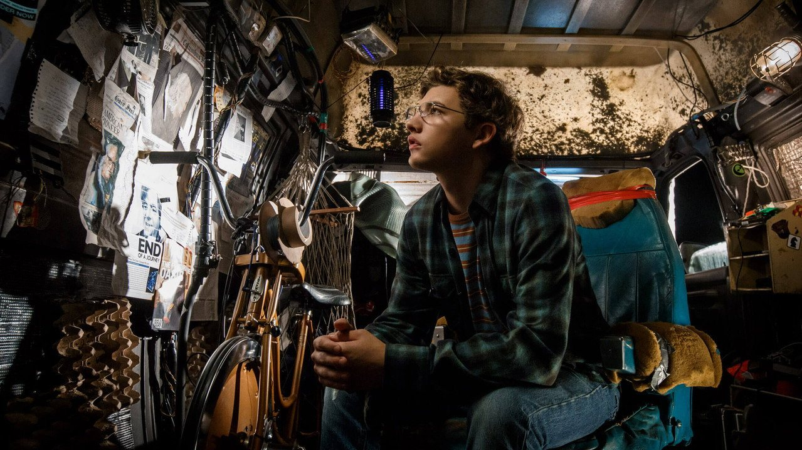
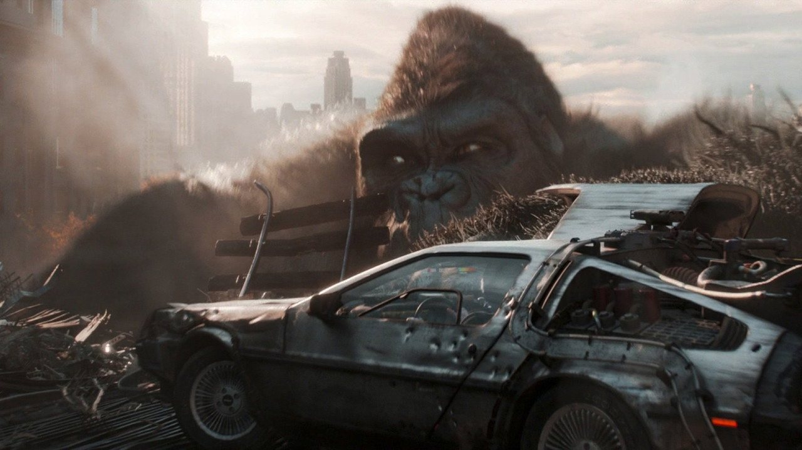
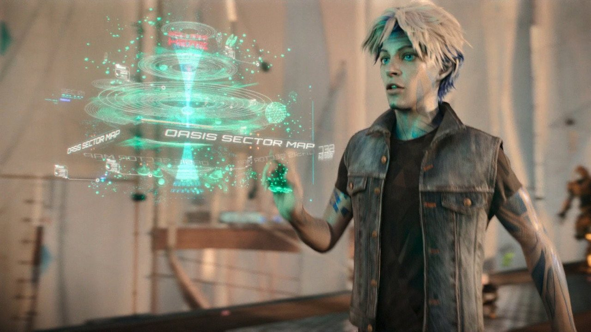
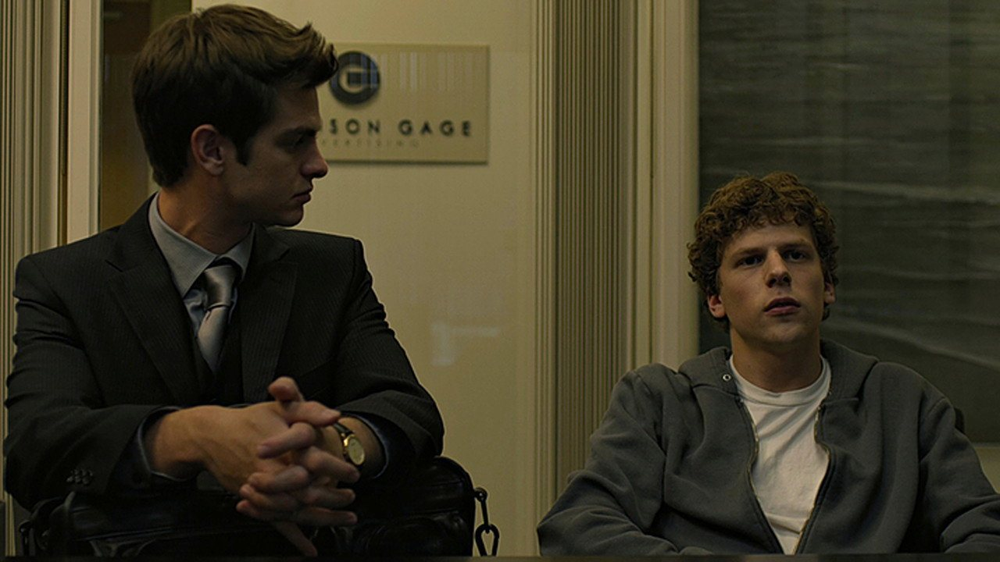
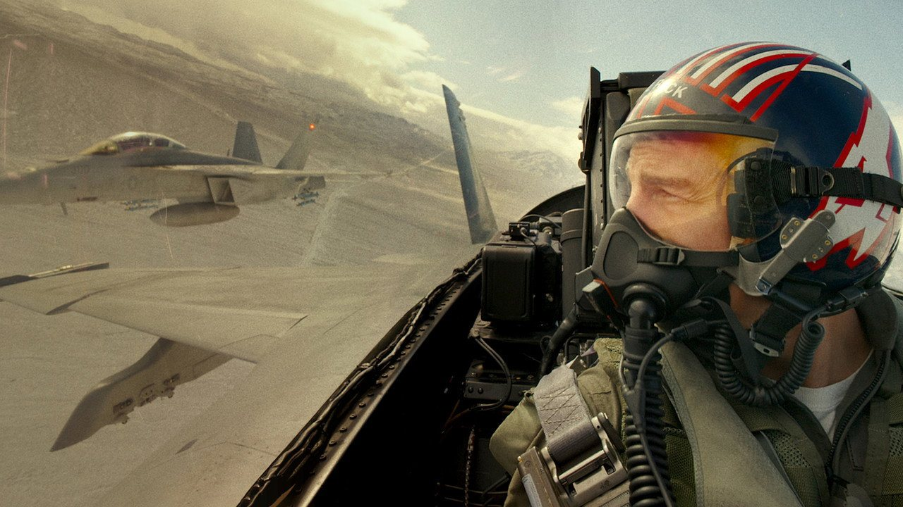
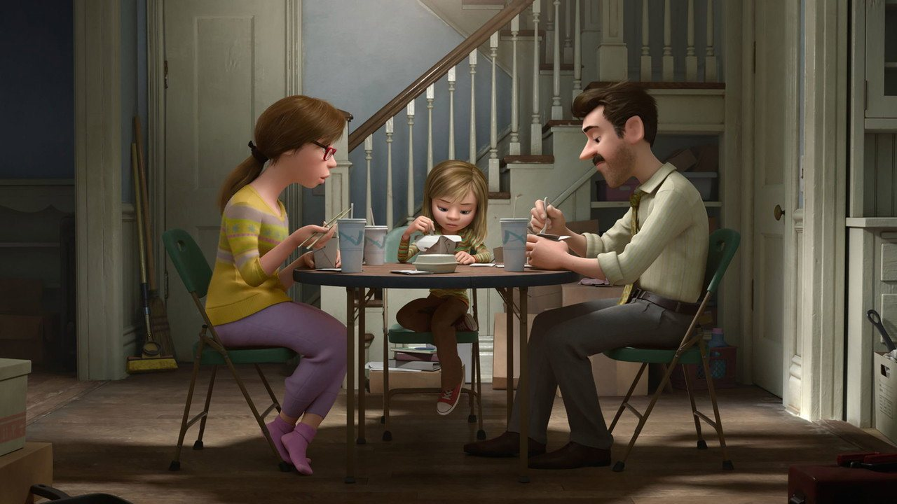
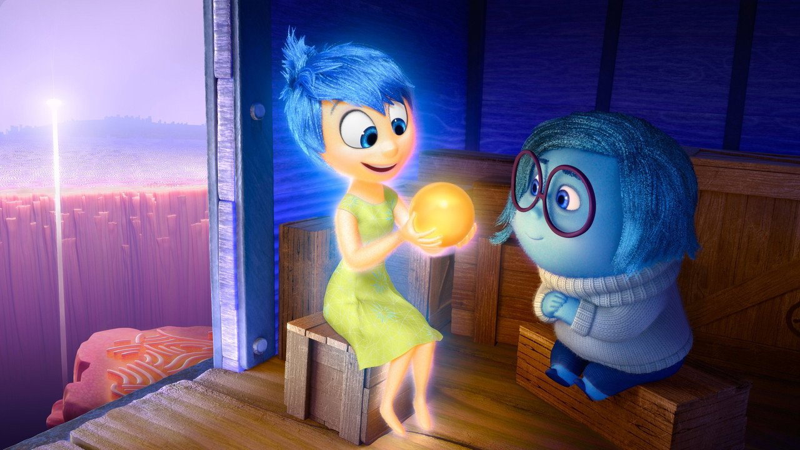

Now viewing
Ready Player One
Wade's search takes him from the Stacks into the limitless OASIS.

Life in the Stacks
Wade looks out from the cramped space he has made his own.

The OASIS race
A giant gorilla looms over the DeLorean as the race turns chaotic.

A world to explore
Parzival studies a glowing map that stretches across the OASIS.
Now viewing
The Social Network
A college project grows quickly, and so do the tensions around it.
Early days
Eduardo and Mark stand together before their partnership is tested.
Building the site
The group crowds around a screen as the new platform takes shape.

Questions remain
Eduardo turns toward Mark as their conflict comes into focus.
Now viewing
Top Gun: Maverick
Maverick returns to the sky for a mission that demands everything.
Back on the flight line
Maverick pauses beside an aircraft and watches the sky.

In formation
Maverick scans the aircraft flying beside him from his cockpit.
Into the evening
A fighter jet rolls down the runway against the last light of day.
Now viewing
Inside Out
Riley's move feels different from the inside, where her emotions lead the way.

A new home
Riley shares dinner with her parents after their move.

A shared memory
Joy shows Sadness a glowing memory from Riley's life.

The floor is lava
Joy leaps ahead while Sadness picks her way through Riley's imagination.